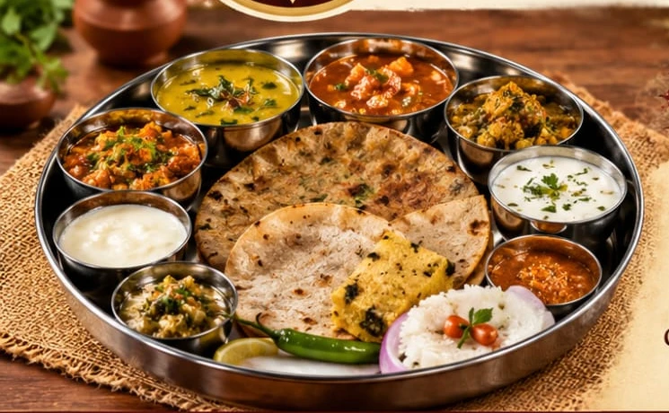

GUJARATI ROOTS. KATHIYAWADI SOUL.
A taste of home.
A table for everyone.
ખરો સ્વાદ… ઘર જેવી લાગણી…
From comforting dal-bhat to hearty rotlo, discover the Gujarati and Kathiyawadi flavours at Shri Ganesh Dining Hall.
Gujarati & KathiyawadiTakeaway available

Good food brings
people together.શ્રી ગણેશ ડાઇનિંગ હોલ
people together.શ્રી ગણેશ ડાઇનિંગ હોલ
Traditional flavours✦Everyday favourites✦A different menu every day✦Food to take home
A WHOLE WEEK OF GOOD FOOD
The weekly menu
See the complete lunch and dinner selection for every day.
SIMPLE FOOD. CLEAR PRICES.
Price list
Vegetable dishes, breads, meal pairings, thalis and sweets.
| Item | Description | Price |
|---|
GET TO KNOW THE MENU
A closer look at the menu
Breads, meal pairings and selected menu favourites.
Food photos are illustrative; actual preparation and serving may vary.
FIND US
Visit Shri Ganesh
Dining Hall
Opp. Surya Mukhi Hanuman TempleGir Gadhada Road
Una – 362560
Gir Somnath, GujaratView location on Google